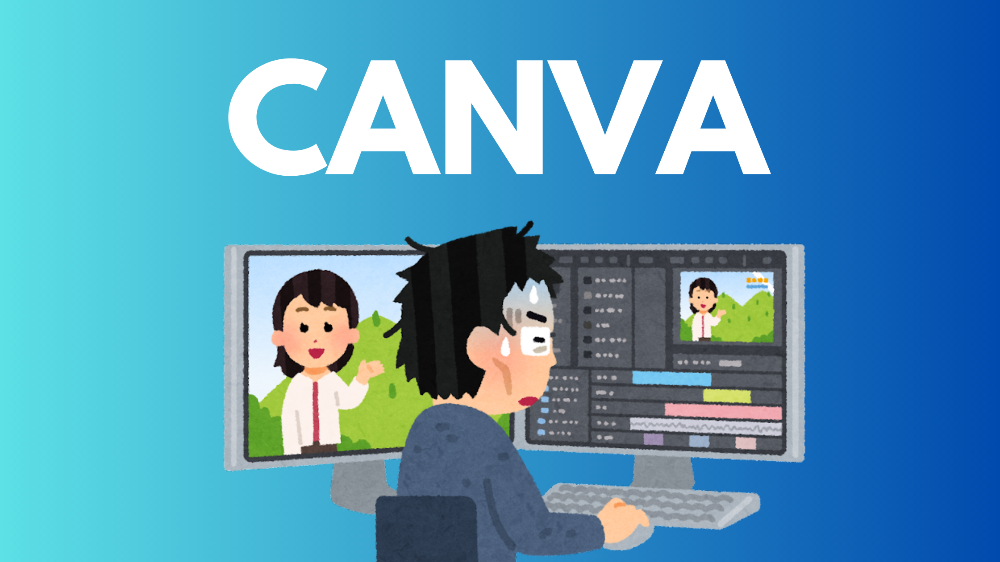

Canva
Canva was founded in 2012 by Melanie Perkins. Usually, this website was first made for graphics, but slowly it has become an online graphic designing app for people all over the world using various graphic designs. By doing this, we can create our own things for our poster bloggers and different apps, and in up age we can create our different design marketing content, educational, and business documents through this app.
Features
Canva has a lot of features that we can use to create our different types of designs. Using templates and design elements, we can create templates for our different images and different videos. By using the drag-and-drop interface, we can create different designs according to our convenience and experience. Canva allows multiple users to work on the design at the same time. Different images can be edited to create your own images. Video editing is the simplest in it, and short videos can be edited as well. We can edit our photos and videos using different thumbnails, and without any cost, we can also fulfill our educational and informal programs now with Canva Pro. In it, we get to see different types of templates that we can use in our own way to create our own images, which can also be styled and made in a unique way.
Use and Benefit
Different people use Canva for their business and any small-scale work in which they edit their videos and pictures in a unique way and present them to the world. By creating different ways to present things to the world in a unique way, Canva is the best tool we can use to drive any brand that we use to run our business. It can improve further.
Download Canva
Click Here
Release Date
Canva was built in 2012, but its release date on the Play Store is 27th November 2017.
Last Update & Version
Last update: 21st October 2024
Version: 2.286.0
Canva is a game-changer for anyone looking to create beautiful designs for clients and earn money, whether you’re a complete beginner or a seasoned professional. Its user-friendly interface and powerful features make it an essential tool for everything from social media graphics to business presentations. In this guide, we’ll walk you through getting started with Canva, maximizing its potential, and leveling up to a professional skillset.
1. How to Get Started with Canva
Starting your Canva journey is incredibly simple, even if you have no prior design experience. Here’s how you can get up and running quickly:
Step 1: Sign Up for Canva
- Head to the website or download the app from your device’s app store.
- Create an account using your email, Google, or Facebook. Canva offers a free plan to start, and you can upgrade to the Pro version later for advanced tools.
Step 2: Get Familiar with the Dashboard
Once logged in, you’ll notice Canva’s clean and organized interface:
- Search Bar: Quickly find templates, design elements, or projects.
- Templates Section: Choose from a vast library of ready-made designs for anything you need, from Instagram posts to resumes.
- Projects: Access all your saved work in one place.
Step 3: Start Your First Design
Click on “Create a Design” and select a format like a poster, social media post, or presentation. If you need a custom size, Canva allows you to set your dimensions manually.
Step 4: Use Templates and Tools
- Browse templates that match your project. Choose one you like and start customizing.
- Add text, images, and shapes by simply dragging and dropping them into your design.
- Experiment with Canva’s tools to change colors, filters, fonts, and layouts to suit your style.
Step 5: Save and Share
When your design is ready, download it in formats like PNG, JPG, or PDF. Canva also makes it easy to share your creations directly on social media or collaborate with others via a shareable link.
Bonus Tips for Beginners
- Explore Canva’s beginner tutorials to learn essential tools and techniques.
- Play around with different templates and styles to discover what works best for you.
2. How to Get the Most Out of Canva
Canva is packed with features that can cater to a variety of design needs for your clients. Here’s how you can leverage these tools to create standout designs and streamline your workflow:
- Tap into Ready-Made Templates: Canva offers templates for everything, including social media posts, presentations, brochures, and more. These templates save you time and give your designs a professional edge.
- Use the Brand Kit: For consistent branding, Canva’s Brand Kit (available in the Pro version) allows you to save your brand’s colors, fonts, and logos so every design aligns with your identity.
- Collaborate with Teams: Whether you’re working with colleagues or clients, Canva makes collaboration simple. Share your designs with team members and let them edit or comment directly on the platform.
- Create Animated and Video Content: Canva lets you add animations and create short videos. With drag-and-drop functionality, you can easily add transitions, text animations, or background music to your projects.
- Save Time with Tools Like Magic Resize: Need your design in different sizes? Canva’s Magic Resize feature lets you adjust dimensions instantly, perfect for consistent content across platforms.
- Leverage Stock Resources: Canva’s library includes millions of stock photos, illustrations, and icons, many of which are free. This saves you from searching external sites.
- Integrate with Other Tools: Canva integrates seamlessly with Dropbox, Google Drive, and social media platforms. You can even use Canva to print your designs and have them delivered to your doorstep.
- Organize Your Work Efficiently: Create folders for your designs to keep everything neat and accessible. This is especially useful if you’re juggling multiple projects.
3. How to Become a Pro Designer on Canva
Want to take your Canva skills to the next level? With dedication and practice, you can move beyond basic designs and create professional-grade visuals.
- Learn Advanced Techniques:
- Custom Layouts: Move beyond templates by creating your own layouts from scratch. This allows you to develop unique designs tailored to your needs.
- Typography Skills: Master the art of combining fonts and using hierarchy to make text visually impactful.
- Grids and Alignment: Canva’s alignment tools help you create polished designs with a professional look.
- Build a Portfolio: Create a diverse portfolio featuring various types of designs. Highlight your creativity with social media graphics, posters, business cards, and presentations. Share your portfolio on platforms like Behance, Dribbble, or your own website.
- Offer Your Services: Canva is a great skill for freelancing. Offer services like creating social media templates, logos, or marketing materials on platforms like Fiverr or Upwork. Many businesses are looking for affordable design solutions, and Canva makes it easy to meet their needs.
- Optimize Your Workflow: Save frequently used designs or elements in folders. Learn shortcuts like Ctrl + D to duplicate elements or Ctrl + Z to undo changes quickly. These small tricks save time and improve your productivity.
- Stay Up to Date: Canva frequently updates its platform with new tools and features. Keep an eye on updates, and don’t hesitate to explore them. Follow Canva’s blog and community for fresh ideas and inspiration.
- Network and Learn from Experts: Join Canva-related forums, Facebook groups, or LinkedIn communities to connect with other designers. Learning from others can introduce you to new techniques and ideas.
- Focus on Consistency: For professional results, consistency is crucial. Use the Brand Kit to ensure your designs are cohesive, especially when working with clients or building your personal brand.
By applying these strategies, you’ll elevate your Canva skills and position yourself as a professional designer capable of creating stunning visuals that stand out.